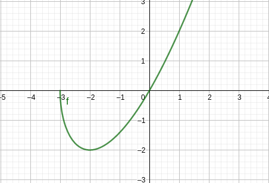
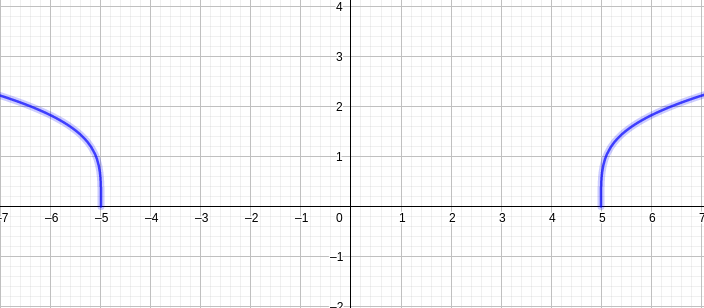
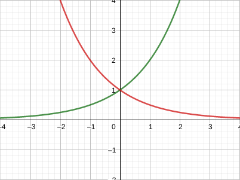
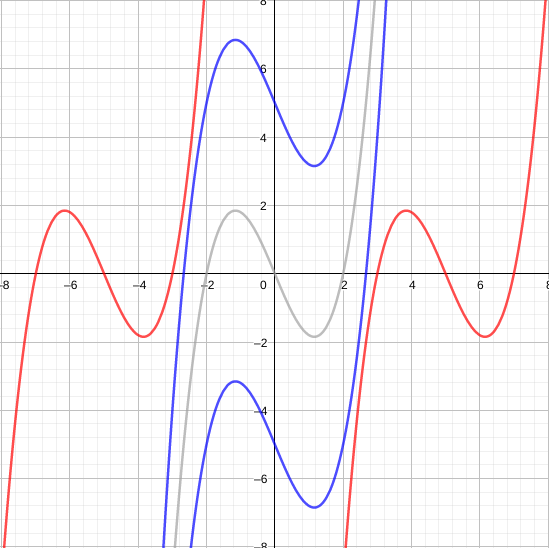
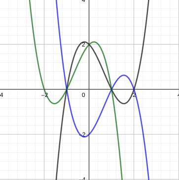

Funções algébricas
Denominamos funções algébricas todas as funções obtidas por operações algébricas como adicção , produto e raiz a partir de polinômios.
EX:
f(x)=x2+1
g(x)=x+xx4−16x2+(x−2)x+1
Por sua vez os gráficos de funções algébricas assumem diferentes formas:
f(x)=xx+3

g(x)=4x2−25

Funções trigonométricas
Conjunto composto por funções de trigonometria, tais como sin(x), cos(x) e tan(x).
O argumento das funções trigonométricas será sempre sempre em radianos.
Domínio em imagem de funções trigonométricas
sin(x) e cos(x) possuem imagem limitas entre −1 e 1, para qualquer valor real x em radianos, ou seja:
−1≤sin(x)≤1−1≤cos(x)≤1
Tais funções também apresentam caracteristicas de periodicidade, pois:
sin(x+2π)=sin(x)cos(x+2π)=sin(x)
A função sin(x) é ímpar enquanto cos(x) é par. Vale lembrar que tan(x)=cos(x)sin(x).
Por sua vez tan(x) também é periódica, pois tan(x+π)=tan(x)
Vale ressaltar que devido cos(x) assumir valores nulos, existem pontos onde tan(x) não pode ser calculada. que são cos(x)=0. Assim sua imagem será:
{Im(tan(x)⊂R∣cos(x)=x}
Funções exponenciais
São funções que obedecem a forma f(x)=ax, onde a é uma constante positiva não nula.
EX: f(x)=2x(crescente) e f(x)=0,5x(decrescente)

Stewart(1.3)
Novas funções a partir de conhecidas
Transformações: podemos aplicar transformações e, funções em funções afim de obtermos novas funções.
Deslocamentos: seja uma constante c real positiva,
quando se conhece o gráfico de f(x), obtemos:
a) y=f(x)+c⇑
b) y=f(x)−c⇓
c) y=f(x−c)⇒
d) y=f(x+c)⇐
Fazemos o deslocamento em c unidades para a direção indicada
Reflexão e expansão: processo de transformação
a) y=c f(x)⇕
b) y=cf(x)⇑⇓
c) y=f(cx)⇔
d) y=f(cx)⇒⇐
e) y=−f(x) espelha em torno de x
f) y=f(−x) espelha em torno de y
DESLOCAMENTO

EXPANSÃO

REFLEXÃO
